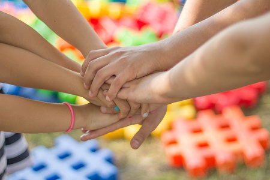
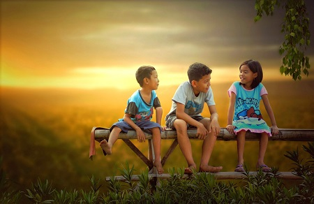
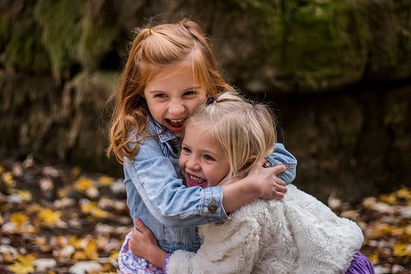
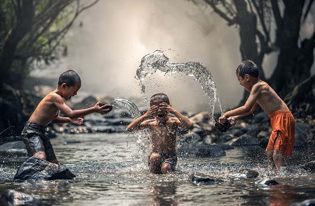

<!DOCTYPE html>
<html lang="he" dir="rtl">
  <head>
    <meta http-equiv="content-type" content="text/html; charset=UTF-8">
    <meta name="viewport" content="width=device-width, initial-scale=1.0">
	<title>דר' רעיה בלנקי וורונ ב - קליניקה לפ יכותרפיה</titl >
	<link rel="icon" type="image/x-icon" href="../img/favicon.ico">
	<link rel="manifest" href="../manifest.json" />
	<META NAME="Author" CONTENT="Raya Blanky">
	<link rel="stylesheet" type="text/css" href="../css/colors.css">
	<link rel="stylesheet" type="text/css" href="../css/navbar.css">
	<link rel="stylesheet" href="../css/style24.css">
	<link rel="stylesheet" href="../css/inner_page24.css">
</head>
<body>
	<div class="container">
		<header id="header" page="tipul_kvutzati"></header>
		<main class="content">			
			<div class="breadcrumbs_more">
					<a href="../index.html">דף הבית</a>  > <a href="tipul_kvutzati.html"> טיפולים קבוצתיים </a> > קבוצה לפיתוח מיומנויות חברתיות 
			</div>
		
			<article class="contentData">
				<h1></h1>
				<section class="twocol reverse">
					
					<div class="col">
						<h2 class="question">מהי קבוצה לרכישת מיומנויות חברתיות ?</h2 
						<p class="answer">קבוצה לרכישת מיומנויות חברתיות הי  קבוצה טיפולית-רגשית אשר נפגשת אחת לשבוע באופן קבוע. במסגרתה מתנסים הילדים ב צירת קשרים עם ילדים אחרים בני גילם בסביבה תומכת, תוך קבלת כלים מהמנח  ומשוב מחברי הקבוצה. ע"פ רוב בקבוצה לרכישת מיומנויות חברתיות ישנם 4-6 ילדי  בגילאים דומים ומנחה. זוהי קבוצה רגשית אשר תשלב טיפול במוסיקה, טיפול  אומנות, משחק וסיפור.	</p>    
					</div>
				</section>
			<div>				
				<h2 class="question">לאילו ילדים מומלץ להשתתף בקבוצות לרכישת כישורים חברתיים?</h2>
				<p class="answer">הקבוצה מתאימה לילדים שיש להם קשיים חברתיים. ילדים שאינם נפגשים או נפגשים מעט עם חברים בשעות אחה"צ, ילדי  אשר מתקשים ביציר  קשרים חברתיים, נמנעים מאינטראקציה חברתית או דחויים על ידי בני גילם. בנוסף, הקבוצה מתאימה לילדים אשר מתקשים ליצור אינטראקציה ורב ית  ם קבוצת השווים  מתקשים להשתתף במשחק לאורך זמן, לווסת את רגשותיהם, לשתף ברגשו יהם ולהבין את עו מו הרגשי של האחר. לגלות התחשבות ואמפתיה כלפי האחר, להבין סיטואציות, לפתור קשיים חבר יים ולהתמודד עם תסכולים.</p>
			</div>
			<div>
				<p>הקבוצות נועדו לי דים  בגילאי 4-12 מהחינוך הרגיל או חינוך מיוחד המשו בים בחינוך רגיל. ישנה חלוק  לפי קבוצות גיל.</p>  
			</div>
			<section class="twocol reverse">
				<div class="col">
					<h2 class="question">שיחות עם ההורים</h2>
					<p class="answer">
השיחות עם ההורים תתקיימנה בתחילת הטיפול, באמ ע (כעבור 5 חודשים) ובסוף הטיפול. ההורים יספרו על תפקודו  
של הילד במסגרות השונות, יקבלו מענה ל אלותיהם וכן דיווח על ת קודו של הילד במסגרת הקבוצה. בנוסף,  
ההורים מוזמנים להתקשר  מנחה מיוזמתם כדי לשאול  אלות או לעדכן את המנחה באירועים חריגים או  
מיוחדים שקראו מחוץ למסגרת הקבוצה.
					</p>
				</div>
				
			</section>
			<section class="twocol">
				
				<div class="col">
					<h2 class="question">איך זה עובד?</h2>
					<p class="answer">בשלב הראשון אני מקיימת שי ה טלפונית עם ההורים על מנת לקבל תמ נה מלאה על התפקוד החברתי של היל  ולבחון לעומק איזה  יומנויות דורשות שיפור.בנוסף, במסגרת השיחה אני אספר להורה על התנהלות הקבוצה ואענה על השאלות של ההורה </p>    
					<p class="answer">בשלב השני, אני מקיימת  גישה אישית עם הילד, בלי ההורה. לפגישה יש כמה  מטרות. ראשית, חשוב לי לייצור קשר ראשוני עם הילד כדי שהוא יכיר אותי ואת חדר הטיפולים. כך, רמת הלחץ שלו תרד, כאשר יכנס פע  ראשונה לקבוצה</p>  
				</div>
			</section>
			<div>
				<p>שני , חשוב לי להכיר את הילד ולבחון אם הוא מתאים לעבודה קבוצתית. זאת על מנת למנוע עגמת נפש מיותרת לילד ולהוריו. לעתים, הילד עדין ל  מוכן לע ודה קבוצתית והק וצה, במקום לעזור, רק תציף אותו ותגרום לתסכול מיותר. במקרים כאלה רצוי להתחיל עם הילד בעבודה פרטנית ולאחר מכן לצרף אותו לקבוצה.</p> 
				<h5>הפגישה הינה בתשלום נפרד בסך <span id "price_social_skills_partani"></span>.</h5>
			</div>
			<section class="twocol">
				<div class="col">
					<p class="answer">
					בשלב השלישי, מתחילים בעבודה הקבוצתית. המפגשים הראשונים יתרכזו בהיכרות ובניית הקבוצה כדי שתהווה  ביבה 
					בטוחה עבור המשתתפים. בהמשך, הילדים יחקרו לעומק את נושא הרגשות ובאופן שהם באים לידי ביטוי בק רים  
					חברתיים. כאן יושם דגש על נושא האמפתיה, שיתוף, הבנת העולם הרגשי של העצמי והיחשפות לעולם הרגשי של ילדים 	
					אחרים. לאחר מכן יושם דגש על אינטראקציות חברתיות – זוגי ת וקבוצתיות. כאן יהיה המקום ליישם את הכלים 
					שהילדים קיבלו עד כה ולהתנסות ביצירת קשרים עם  לדים אחרים בסביבה תומכת ובטוחה.</p>
					<p> יש לציין שהאינטראקציות מת יימות כל הזמן במסגרת הקבוצה – אבל בשלב הנוכחי, הדגש הוא על פעילות 					חברתית משותפת, שיתוף פעולה ופתרון בעיות תוך כדי הפעילות המשותפת.</p>
				</div>
				
			</section>
			<section class="hebrew">
			<div>
				<p>הקבוצות מחולקות לפי גילאים. </p>
				<p>עיקר העבודה מתבצעת על ידי  מוזיקה, אומנות ומשחק. תוך כדי הפעילויות מת צע דיון ומתן משוב. כך לומדים הילדים לחזק את ההתנהגויות אשר מסייעות להם חברתית ולשנות התנהגויות אשר מקשות עליהם. בדרך זו משמשת הקבוצה כמעין מע דה ליצירת קשרים אשר תוצאותיה משפיעים עם הזמן על הסביבה החברתית היומיומית  ל הילדים.</p>
				<p class="divider30"></p>
				<p>החוויות החיוביות של המשתתפים בקבוצה מסייעות להם להשתמש בכלים שלמדו גם מחוץ לכותלי החדר.</p>
				<p class="divider30"></p>
			</div>
			<div>
				<p>הקבוצות מתקיימות פעם בשבוע למשך 45 דקות בשעה קבועה. הקבוצות מתחילות אחרי החגים ונמשכות עד סוף יוני. ניתן להצטרף גם באמצע השנה. </p>    
				<p><h2>מיקום הקבוצות: </h2> הקבוצות מתקיימות בקליניקה שלי בקרית השרון, נתניה.</p>   
			</div>
			</section>
			 <h5>עלות הקבוצה: <span id="price_social_skills_kvuza"></span> לחודש. </h5>
		</article>
	</main>

	<footer class="footer"></footer>
</div>
<script src="../js/menus24.js" type="text/javascript"> </script>
</body>
</html>		